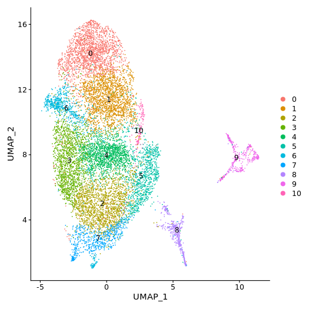
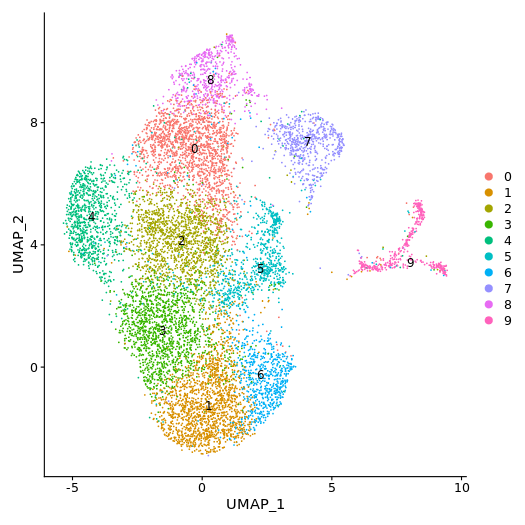
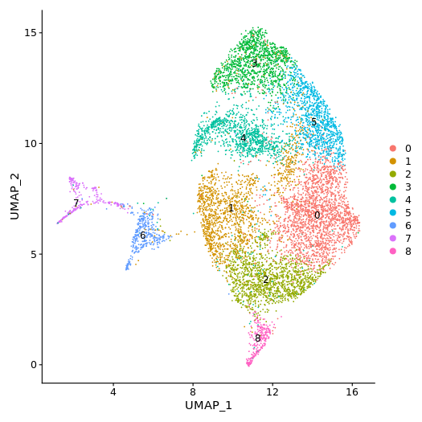
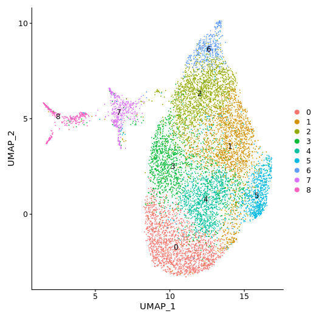
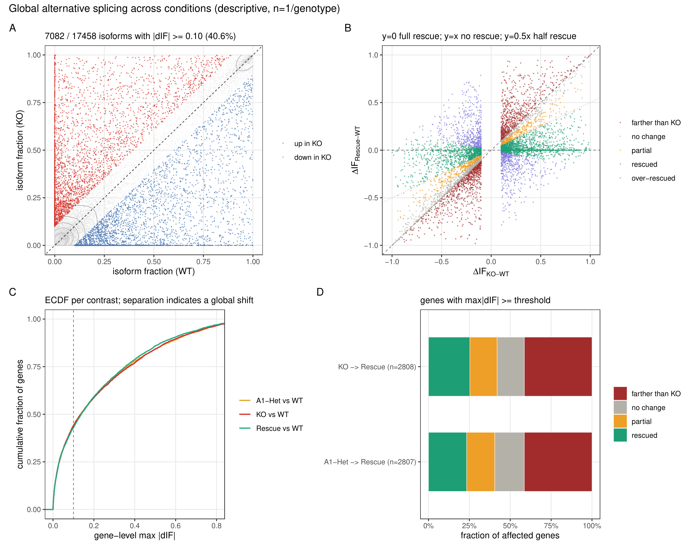

2. wf-single-cell 矩阵与官方报告
EPI2ME wf-single-cell（10xv3 chemistry）的基因/转录本计数矩阵与官方报告：barcode 检出（knee plot）见下，完整报告按样本切换。
本组学与 sc_10x 为同一次 Chromium GEM 分库的双平台测序（Nanopore 全长 cDNA），10X Nanobarcode 在两平台一一对应。上游 01 basecalling / 02 QC / 03 wf-single-cell 由测序公司完成；本地流程为 05 isoform 定量 → 06 DTU / 07 APA → 09 与 10X 整合 → 10 全局可变剪接。
细胞层面经过两步：矩阵重捞回（wf-single-cell 以 abundance ≥50 重跑 + 10X 白名单对齐，共 63,383 个 nano 细胞）与 10X QC 过滤（05/06/07 的 pseudobulk 与 09 的跨平台统计只使用带 10X 注释的 34,839 个细胞）。下表同时给出两个口径。
reads / full-length 数取自 wf-single-cell 交付的 config_stats.json；检测细胞数 = 白名单对齐后的最终细胞数；"重捞回"列取自 2.Matrix_rescued/<sample>/rescue_summary.csv 的 status 字段；"10X QC 后"列 = 带 10X v2 注释、用于下游计算的细胞数。
EPI2ME wf-single-cell（10xv3 chemistry）的基因/转录本计数矩阵与官方报告：barcode 检出（knee plot）见下，完整报告按样本切换。
公司按样本独立运行 Seurat 标准流程并输出差异基因与富集分析（DIFF、enrich/GO/KEGG/Reactome）。此处展示每样本 gene 层 cluster UMAP；跨样本统一细胞类型来自 10X v2 注释的 barcode 转移（第 7 节）。




交付物中还含 tSNE、PCA、Marker/DIFF 表、GO/KEGG/Reactome 富集等（位于 upstream/3.Seurat/<sample>/{gene,isoform}/）。
基于细胞重捞回后的 transcript_rescued_feature_bc_matrix（细胞 × ENSMUST 转录本），用 GFF 的 cmp_ref 属性做 tx→gene 映射，并在 10X QC 通过的细胞上做 pseudobulk（06/07/10 的输入）。
跨样本合并矩阵 54,936 转录本 × 4 样本（pb_tx_all.csv）；基因层面 pb_gene_all.csv；tx→gene 映射见 tx_gene_map.csv。
对 4 组对比（KO_vs_WT / A1Het_vs_WT / A1Rescue_vs_WT / A1Rescue_vs_A1Het）做转录本使用差异分析。过滤后达标基因 16,371 / 25,735、达标转录本 28,067 / 54,936（多 isoform 基因 7,864），每组对比对全部 28,067 个转录本做 satuRn 检验。
输出表含 estimates / se / df / t / pval / regular_FDR / empirical_pval / empirical_FDR / padj，其中 padj 取 regular_FDR。
usage_delta_*.csv 记录转录本在两组 pseudobulk 中的存在/缺失切换（0/1 presence），上表为 |Δusage| ≥ 0.05 的条目数。
统计设计说明 satuRn KO vs WT satuRn A1Het vs WT satuRn A1Rescue vs WT satuRn A1Rescue vs A1Het Δusage KO vs WT Δusage A1Het vs WT Δusage A1Rescue vs WT Δusage A1Rescue vs A1Het
基于 GFF 3' 端簇调用 PAS（poly(A) 位点），构建 consensus PAU 矩阵，计算每对比的 ΔPAU 与基因级 3'UTR 延长指数（distal change）。
直方图只保留两侧都检出（0 < PAU < 1）的基因，"剔除 dropout" 列即被过滤掉的单样本检出/缺失基因数。
靶基因 PAS 明细（88 条） consensus PAU 矩阵 distal change KO vs WT distal change A1Rescue vs A1Het ΔPAU KO vs WT
Nanopore 各样本细胞 barcode 与 10X 四库的交叠百分比：对角线 = 配对样本（100%），非对角 0.4~0.5% 为随机本底。
nano QC 后 = 10X QC 通过、进入下游计算的细胞数（nano 原始 = 重捞回后的全部细胞）；shared_cells = 双平台同时检出且带 10X v2 注释的细胞；nCount Spearman = 共享细胞双平台 UMI 数相关性（log1p）；gene Spearman = 配对 pseudobulk 基因表达 Spearman。
barcode 交叠矩阵 配对概览 注释覆盖表 注释来源说明 组成比较 WT 共享细胞表 logFC 一致性 KO vs WT
输入为 05 的 pb_tx_all.csv。对每个基因的 isoform fraction（IF，转录本占该基因的比例）计算 ΔIF = IF扰动 − IFWT，并定义转录本层面 RI = 1 − ΔIF_Rescue / ΔIF_扰动、基因层面 RI = 1 − ‖ΔIF_Res‖ / ‖ΔIF_扰动‖。分级区间：farther than KO < 0，no change [0, 0.2)，partial [0.2, 0.5)，rescued [0.5, 1.2)，over-rescued ≥ 1.2。
过滤：min_umi = 50、min_if = 0.05、|ΔIF| ≥ 0.10 → 保留 5,027 基因 / 17,458 转录本（原始 25,735 基因 / 54,936 转录本）。

以下全部文件与本 index.html 位于同一 showcase 目录内，打包整个目录后可在本地浏览器（Chrome/Edge 推荐）直接查看。
页面展示的图是 assets/ 下由原始 PDF 以 200 dpi 渲染的 PNG（共 24 张，不单独列出）；每张图下方的"原始 PDF ↗"指向矢量文件。